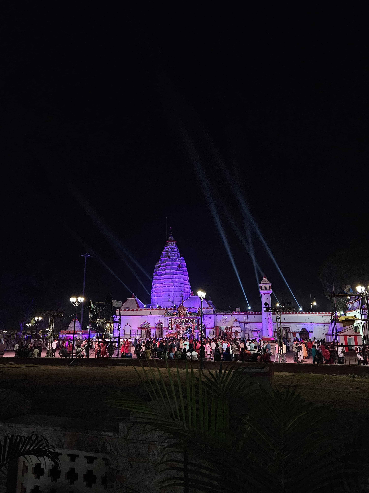
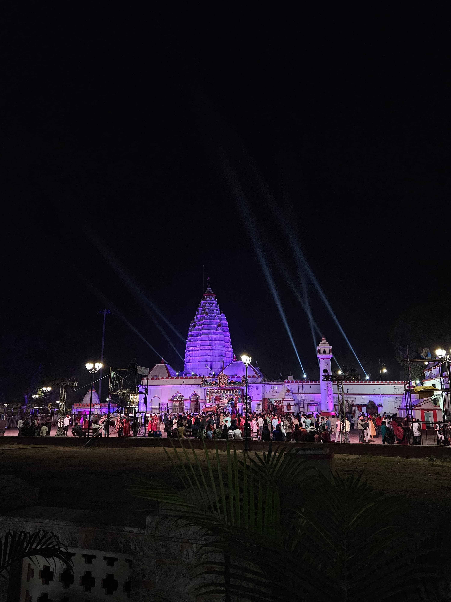
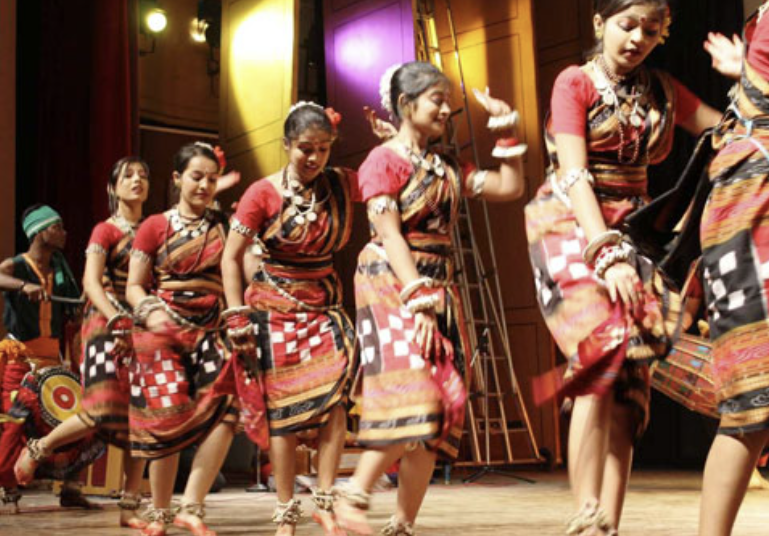
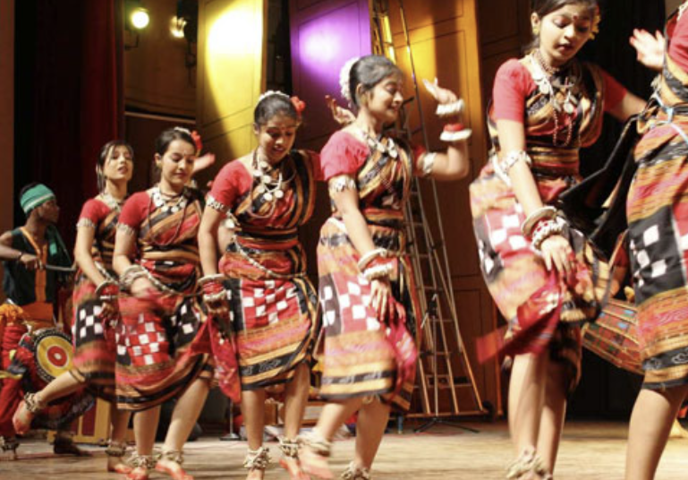

Heritage of Sambalpur
Sambalpur, one of the oldest cities of Odisha, is a land steeped in history and tradition. Known for its famous Sambalpuri sarees with intricate hand-woven designs, the city reflects the rich craftsmanship passed down through generations. The region is home to ancient temples like the Maa Samaleswari Temple, which draws pilgrims from far and wide. Festivals such as Nuakhai celebrate the agrarian roots of the land, while folk dances and music keep age-old cultural expressions alive. With its blend of art, spirituality, and timeless customs, Sambalpur stands as a living testament to Odisha’s vibrant heritage.About Sambalpur
Sambalpur is a vibrant city in Odisha, nestled on the banks of the Mahanadi River üåä. It‚Äôs the fifth-largest city in the state and gets its name from the revered Goddess Samaleswari üôè. Founded in 1528 by Raja Balaram Dev, the city blends tradition with progress üèõÔ∏èüõ§Ô∏è.
Temples & History
Samaleswari Temple

 

Dedicated to Goddess Samaleswari, this temple is an important religious site and the presiding deity of Sambalpur.Located on the serene banks of the Mahanadi River in Sambalpur, Samaleswari Temple is one of Odisha’s most revered spiritual landmarks. Dedicated to Goddess Samaleswari, the presiding deity of western Odisha, the temple dates back to the 16th century, built by King Balaram Dev. Known for its distinct Sandhara architecture, the shrine houses a granite idol adorned with traditional gold ornaments and holds deep cultural and religious significance. The temple is the focal point of major regional festivals like Nuakhai (the harvest celebration) and Navaratri, attracting thousands of devotees annually. Currently undergoing a ₹200 crore transformation under the SAMALEI project, the temple complex is evolving into a modern spiritual and cultural hub with amenities like a parikrama path, museum, and riverfront development—making it a must-visit for both pilgrims and tourists.
Huma Temple


The Leaning Temple of Huma, located 23 km from Sambalpur on the banks of the Mahanadi River, is a rare architectural wonder dedicated to Lord Shiva. Built in the 17th century by King Baliar Singh, the temple is famous for its tilted structure, with the main shrine and surrounding buildings leaning at unique angles. Despite the tilt, the temple remains structurally stable and continues to attract devotees and tourists. Every year during Mahashivratri, thousands gather for the grand fair. The nearby river is home to sacred “Kudo” fish, which are revered and fed by visitors.
Culture & Cuisine
Historical Significance
Sambalpur has a glorious past dating back to ancient times. It finds mention in the works of Ptolemy and Chinese traveler Xuanzang. The region played a key role in India's freedom movement under the leadership of Veer Surendra Sai.
Sambalpuri Handloom
The world-famous Sambalpuri sarees represent Odisha's artistic excellence. The unique ikat weaving technique and traditional motifs like shankha (conch), chakra (wheel), and phula (flower) symbolize the region’s cultural depth.
Folk Culture and Dance
The cultural landscape of Sambalpur thrives through vibrant folk dances like Dalkhai, Karma, and Rasarkeli. Traditional instruments such as the dhol and mahuri accompany these performances, especially during local festivals.
 

Festivals
The most celebrated festival is Nuakhai & Sheetal Sasthi, marking the first harvest of the year. Nuakhai reflects the deep agrarian roots and the community’s connection with nature and tradition whereas Sheetal sasthi celebrates the divine day of Lord Shiva and Maa Parvati's Marriage.
Tribal Legacy
The region is home to various tribal communities such as the Gond and Kandha, whose customs, beliefs, and lifestyles add to the richness of Sambalpur’s heritage.
- Sambalpuri Sarees
- Rasabara, Chhenapoda, and other traditional dishes
- Folk dances like Dalkhai and Karma